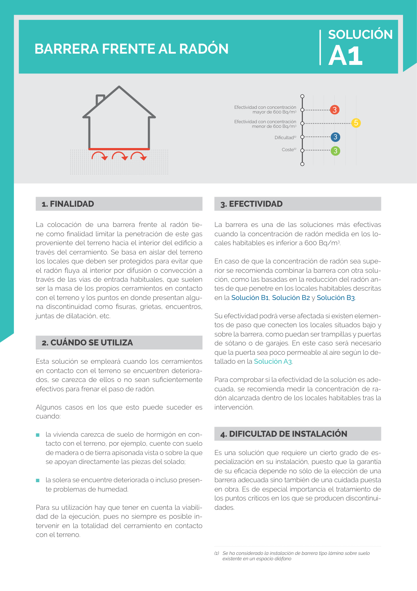

GUIA · Portada y páginas previas · versión sin-fecha · capa guia
Formatos: JSON compacto · Markdown · PDF fuente
Ámbito del documento · texto del ámbito · documento y tablas
Tipo: tablas, figuras · nivel 0 · sección estimada: Portada y páginas previas · padre:
Efectividad con concentración mayor de 600 Bq/m3 Efectividad con concentración menor de 600 Bq/m3 Dificultad(1) Coste(1) 3 5 3 3

PDF fuente redistribuible: copia fiel enlazada en esta página (SHA256 verificado).